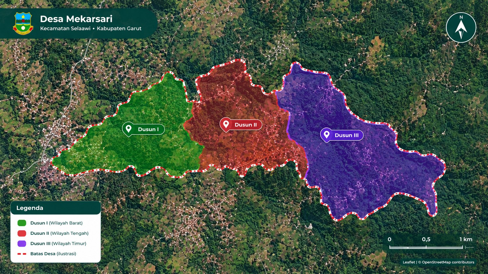

Kontak Kami
Kami siap melayani dan membantu Anda
Informasi Kontak
Alamat Kantor Desa
Kp. Ciloa Simpang RT/RW 01/05, Desa Mekarsari
Kec. Selaawi, Kab. Garut, Jawa Barat 44187
Jam Pelayanan
Senin - Jumat: 08.00 - 15.00 WIB
Istirahat: 12.00 - 13.00 WIB
Telepon
(0262) 123456
Kantor Desa Mekarsari
Selaawi, Garut

Desa Mekarsari
Melayani dengan Hati